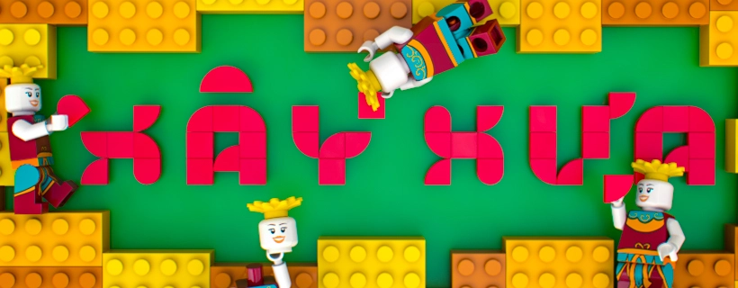

Câu chuyện của chúng mình

GIỚI THIỆU CHUNG
Xây Xưa là dự án phi lợi nhuận thành lập bởi nhóm học sinh trường THPT Chuyên Đại học Sư phạm với mục đích khơi dậy niềm đam mê LEGO và chia sẻ kinh nghiệm về bộ môn lắp ráp cho cộng đồng. Ngoài ra, với mong muốn gây quỹ bảo tồn những công trình độc đáo tại Hà Nội, Xây Xưa thiết kế và dự định mở bán các sản phẩm lấy cảm hứng từ chính những địa điểm này.
CẢM HỨNG:
Xây Xưa là đứa con tinh thần của chúng mình – những người lớn lên cùng niềm say mê với những viên gạch LEGO nhỏ bé. Với chúng mình, đây không đơn thuần là một sở thích, mà còn là thế giới nơi trí tưởng tượng được bay xa, nơi mọi sự sáng tạo được phô diễn không giới hạn. Đặc biệt, những viên gạch tưởng chừng vô tri ấy lại trở thành “chất keo” gắn kết các thành viên trong gia đình, là cách để mỗi người lưu giữ những ký ức đáng nhớ trong cuộc đời.
Chính vì vậy, Xây Xưa ra đời với mong muốn lan tỏa đam mê LEGO đến với ngày càng nhiều người, để ai cũng thấy rằng, không có bất kì ranh giới tuổi tác hay trình độ trong thế giới LEGO. Mỗi viên gạch đều có thể trở thành mảnh ghép cho một điều gì đó lớn lao hơn – một niềm vui, một sự kết nối, hay một giấc mơ từ thuở nhỏ.
HOẠT ĐỘNG:
- Hoạt động 1: Chia sẻ kinh nghiệm, trải nghiệm với LEGO dưới dạng các bài đăng.
- Hoạt động 2: Tổ chức cuộc thi sáng tạo MOC (My Own Creation) và giới thiệu ý tưởng xây dựng các mô hình LEGO lấy cảm hứng từ những công trình độc đáo tại Hà Nội.
THEO DÕI XÂY XƯA:
- Page Facebook Xây Xưa:
- Kênh YouTube Xây Xưa:
- Tài khoản Instagram
- Trang web Xây Xưa: xayxua.com
Thành viên dự án
Chu Quang Huy - President, Co Founder
Chào mọi người, mình là Bin – Chủ tịch và người sáng lập của dự án Xây Xưa.
Xây Xưa là đứa con tinh thần mà chúng mình đã ấp ủ, nuôi dưỡng qua nhiều tháng ngày với tất cả sự đam mê, kiên trì và tình yêu dành cho Hà Nội. Từ những mái ngói rêu phong của ngôi nhà cổ trong phố cổ, đến những tòa cao ốc hiện đại vươn mình giữa lòng thủ đô, Hà Nội luôn hiện lên như một bức tranh đa tầng, vừa mang trong mình vẻ đẹp truyền thống vừa hòa quyện với nhịp sống hiện đại.
Sinh ra và lớn lên tại mảnh đất này, mình luôn có một tình cảm đặc biệt với Hà Nội – không chỉ bởi những công trình kiến trúc, mà còn vì những câu chuyện, ký ức và chiều sâu văn hóa được lưu giữ trong từng viên gạch, từng mái nhà.
Với niềm đam mê lắp LEGO từ thời thơ ấu, mình cùng những người bạn thân yêu mong muốn thông qua Xây Xưa có thể lan tỏa vẻ đẹp kiến trúc của Hà Nội đến với mọi người, đồng thời khơi gợi niềm yêu thích với bộ môn lắp ghép và sự sáng tạo trong mỗi người.
Nguyễn Trung Dũng - Co Founder
Chào mọi người, mình là Trung Dũng - Đồng sáng lập của dự án Xây Xưa.
Trong sinh nhật 5 tuổi, mình đã may mắn được tặng một mô hình LEGO nhỏ nhắn. Đây cũng là cơ duyên của mình với món đồ chơi này bởi khi càng lớn lên, mình càng đắm chìm vào chúng hơn: mình sẵn sàng dọn mọi kệ tủ để dành chỗ trưng bày chúng, sẵn sàng dành cả tiếng nằm “lê liệt” trên sàn để tự xây ngôi nhà trong mơ, hay sẵn sàng khóc òa lên rồi “ăn vạ” bố mẹ khi đánh mất 1 mảnh gạch.
Với niềm đam mê to lớn với LEGO, Xây Xưa chính là nơi ước mơ chia sẻ và học hỏi về món đồ chơi này của mình trở thành hiện thực. Tham gia Xây Xưa, mình đồng thời mong muốn những giá trị “vô hình” của những mô hình lắp ráp này sẽ càng được lan tỏa rộng rãi hơn, xóa nhòa ranh giới tuổi tác hay trình độ trong cộng đồng LEGO.
Phan Châu An - Co Founder
Chào cậu! Mình là Châu An - đồng sáng lập của dự án Xây Xưa.
Và câu chuyện của mình với Xây Xưa cũng rất vô tình.
Mình nhớ khi đó Huy kể về ý tưởng dự án, tính mình thì hay thích những thứ mới lạ, nên thật lòng khi nghe Huy kể xong, mình đã đi khoe với không biết bao nhiêu người rằng mình có 1 đứa bạn hay ho như thế.
Tuổi thơ của mình chỉ quay quanh với sáp màu, giấy vẽ, đất nặn, robot, và mô hình lắp ráp. Mình nghĩ với mỗi đứa trẻ, hay kể cả những người trưởng thành, được sở hữu 1 mô hình lắp ráp, như thể được hoà mình vào thế giới riêng vậy. Nói thật, ở độ tuổi nào mình cũng trân quý và mơ mộng khi chơi với nó như vậy đấy.
Và như 4 thành viên còn lại, mình cũng sinh ra và lớn lên ở Hà Nội. Và với mình, Hà Nội là mỗi khi mẹ đèo lên đường Hoàng Diệu, khi thấy hàng cây xanh len lỏi nắng, khi không lần nào mình không ngước lên để ngắm nhìn. Hà nội với mình, là những quán ốc vỉa hè, là được ăn Phở lúc nào cũng thấy vừa miệng, là mỗi lần ước sau này triệu phú, mua lại Kem Tràng Tiền.
Hà Nội với mình, còn nhiều hơn thế. Vậy nên một trong những lí do khiến mình chốt hạ lời đề nghị của cu Bin, rằng đơn giản bởi mình muốn “khoe” Hà Nội cho cả thế giới, lưu giữ Hà Nội theo 1 cách riêng biệt.
Mặc dù quá trình hiện thực hoá “giấc mơ” tuổi 17 của 5 anh em thật lòng, rất nhiều chông gai. Nhưng mình nghĩ chắc do tuổi trẻ hoài bão lớn, nên cứ làm, cứ tiếp tục, nhiệt huyết vậy thôi hẹ hẹ.
Mong rằng mỗi sản phẩm của Xây Xưa, cậu sẽ thấy được Hà Nội cậu nhung nhớ, thấy được tuổi thơ và kỉ niệm.
Nguyễn Minh Anh - Co Founder
Chào mọi người, mình là Manha – Đồng sáng lập của Xây Xưa.
Từ nhỏ mình đã luôn say mê với việc tạo ra thế giới bằng đôi tay: từ giấy, từ bìa cứng, từ gỗ, từ đất nặn, từ bất cứ chất liệu nào có thể ghép nối nên hình hài. Dần dần, mình nhận ra đó không chỉ là sở thích, mà là cách mình lưu giữ ký ức và kể những câu chuyện không lời.
Với mình, Xây Xưa không nhằm phục dựng lại một Hà Nội hoàn chỉnh, mà là để góp nhặt những mảnh nhỏ – mái ngói, hàng cây, tiếng rao, góc phố – từng là cả một thế giới trong trí nhớ tuổi thơ. Mình tin rằng, khi lắp ráp lại bằng sự nâng niu và tưởng tượng, những điều tưởng chừng vụn vặt ấy có thể chạm đến cảm xúc rất riêng trong mỗi người.
Đào Nhật Quang - Web Developer, Co Founder
Chào mọi người, mình là Quang